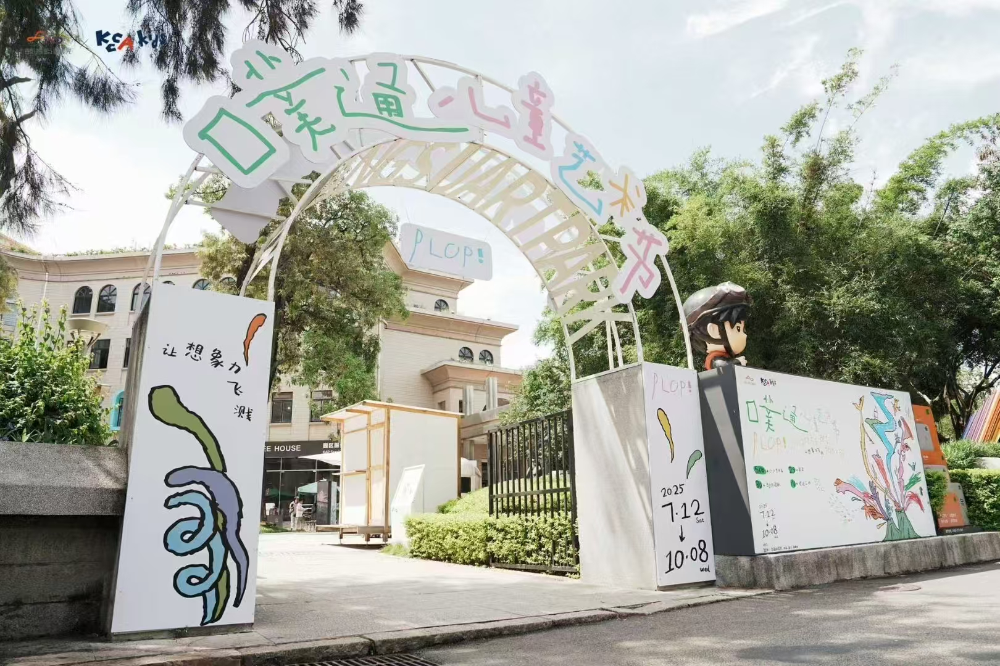
01 · Exhibition
Exhibition / 展览
Putong Children's Art Festival featured Mantou Art Studio and its students in an exhibition themed "Opening the Doors of Imagination Together." Children from Xiamen, China and Calgary, Canada used drawing to portray their own cities, revealing children's imagination and urban charm while expanding their international perspective.
噗通儿童艺术节，馒头酱和学员们参与展览，主题为“同时打开想象力大门”。中国厦门孩子和加拿大卡尔加里孩子用画笔描绘各自城市。展示了孩子的想象力和城市魅力，也拓展了孩子们的国际视野。

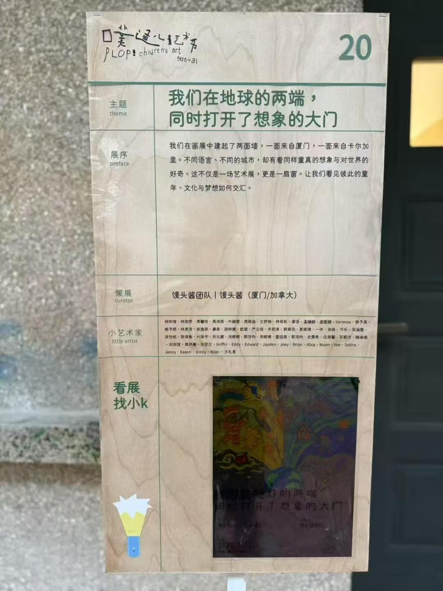
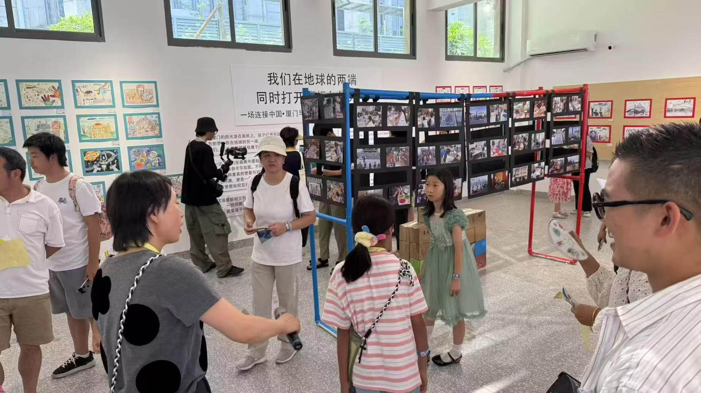
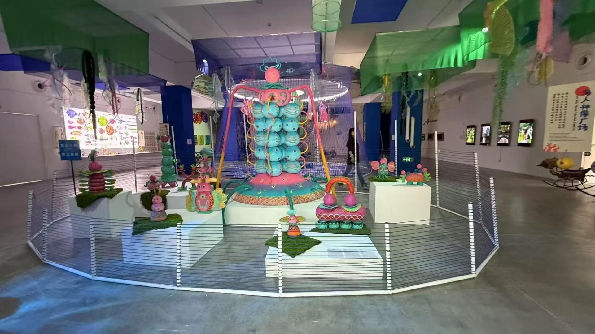
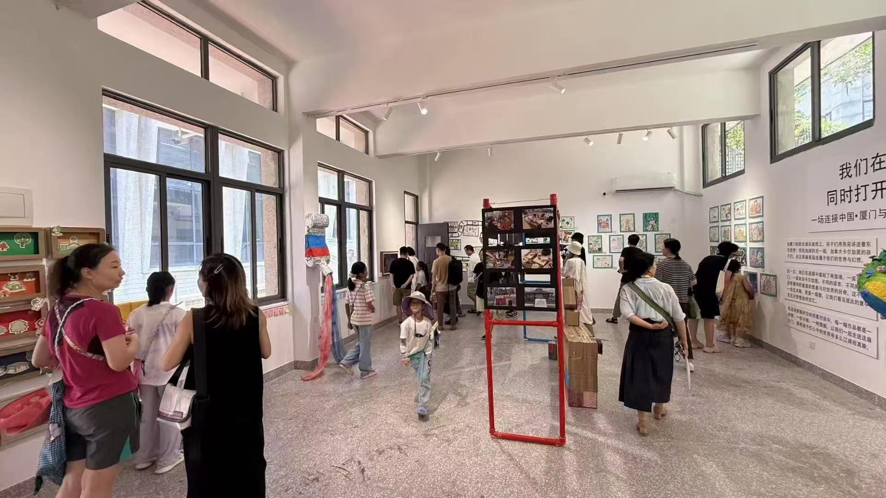
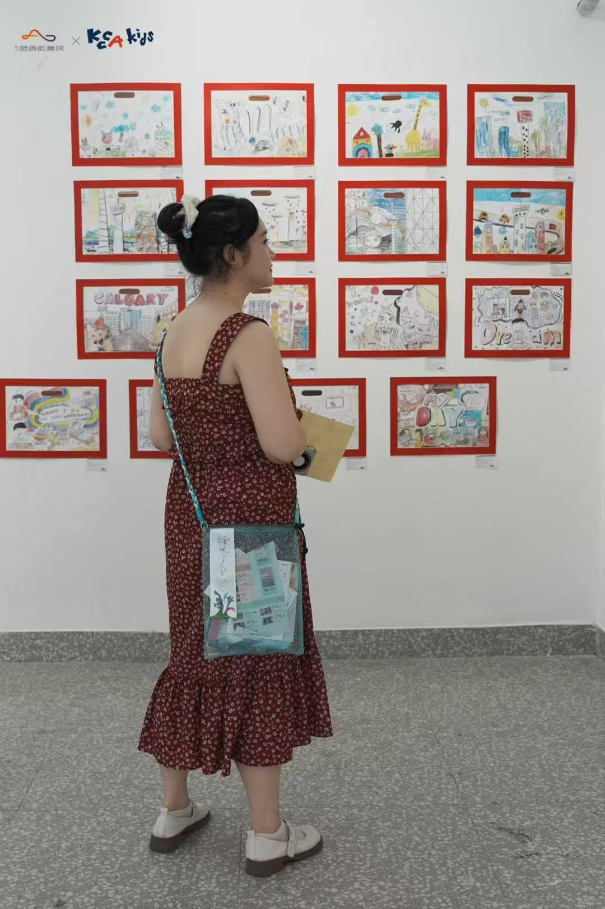
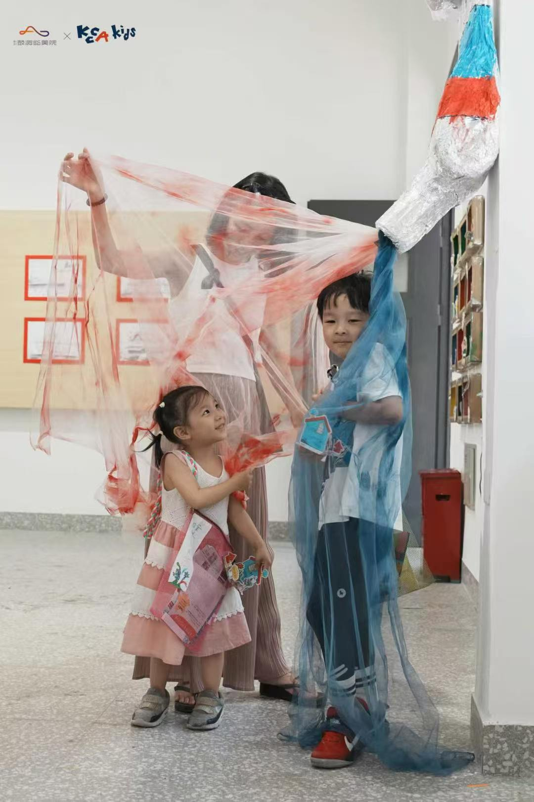
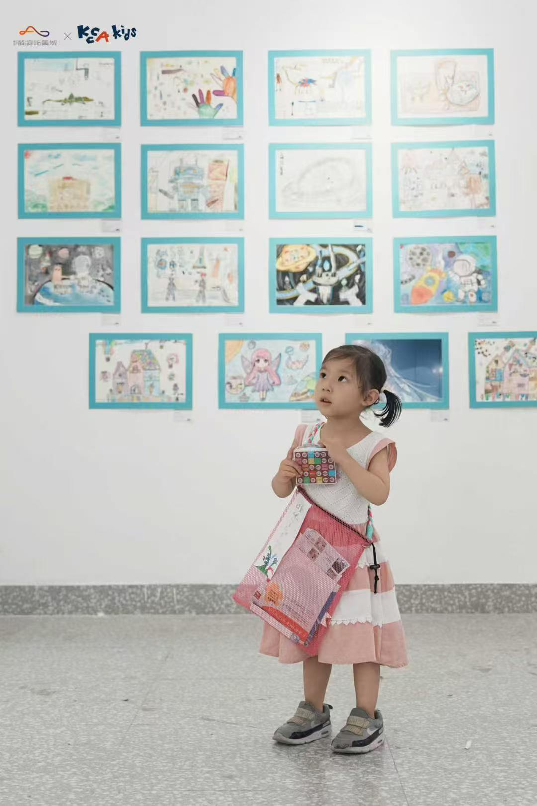
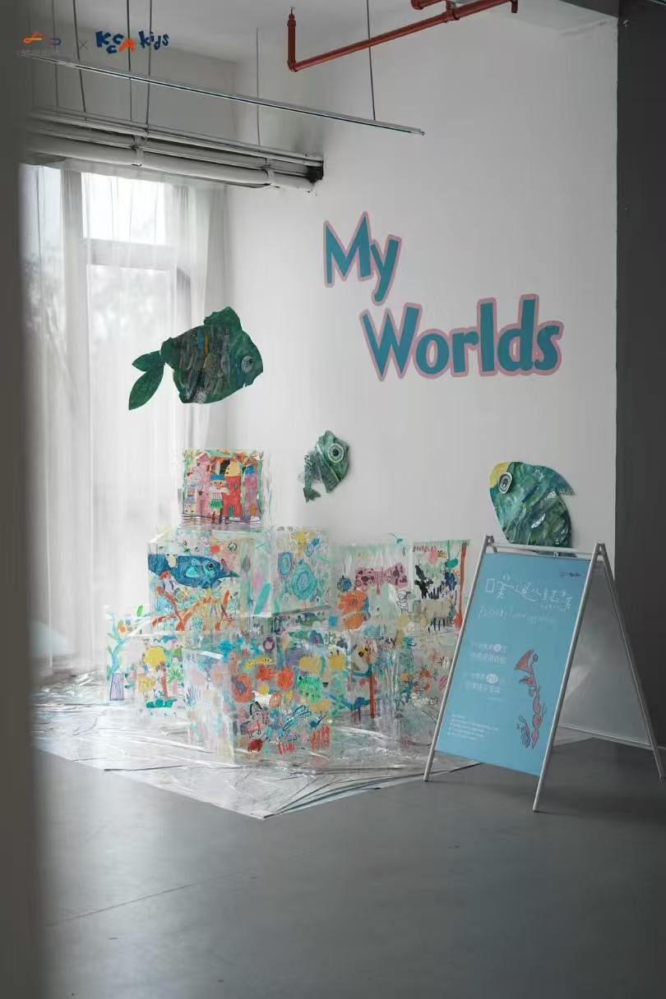
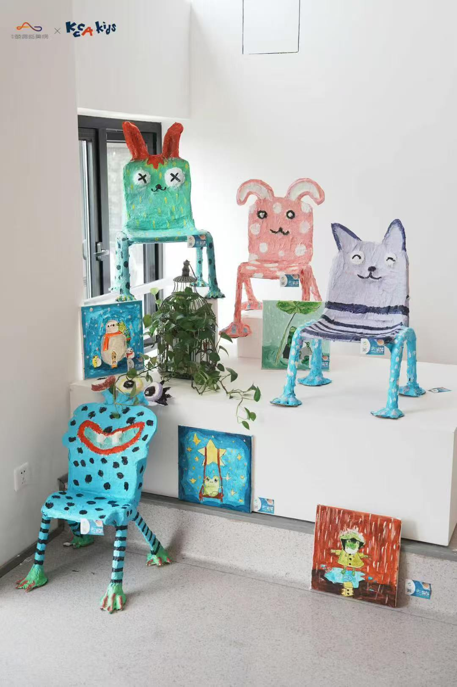
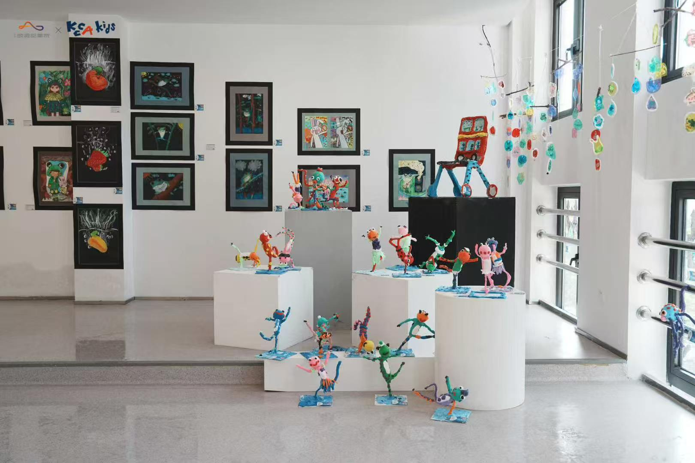
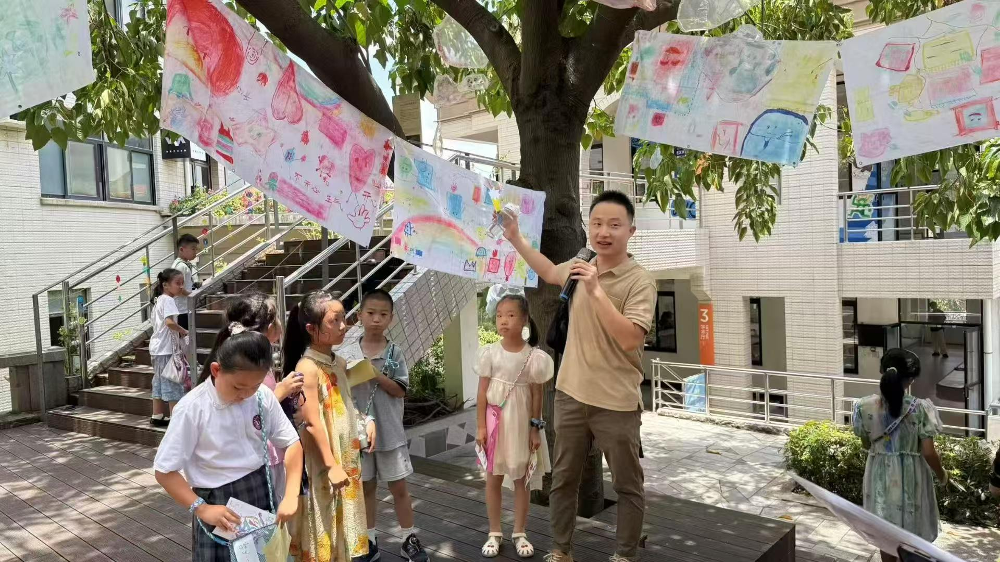
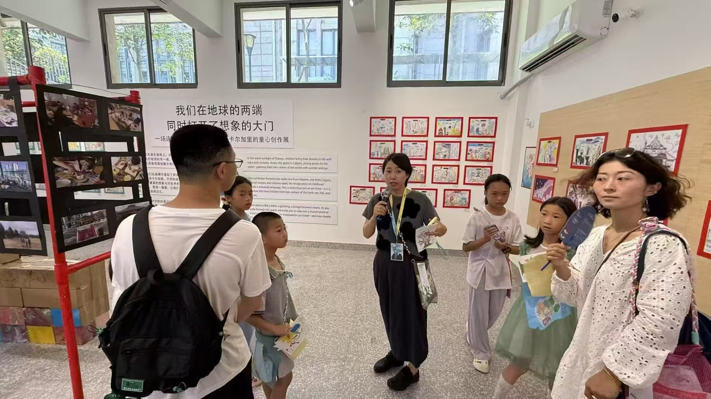
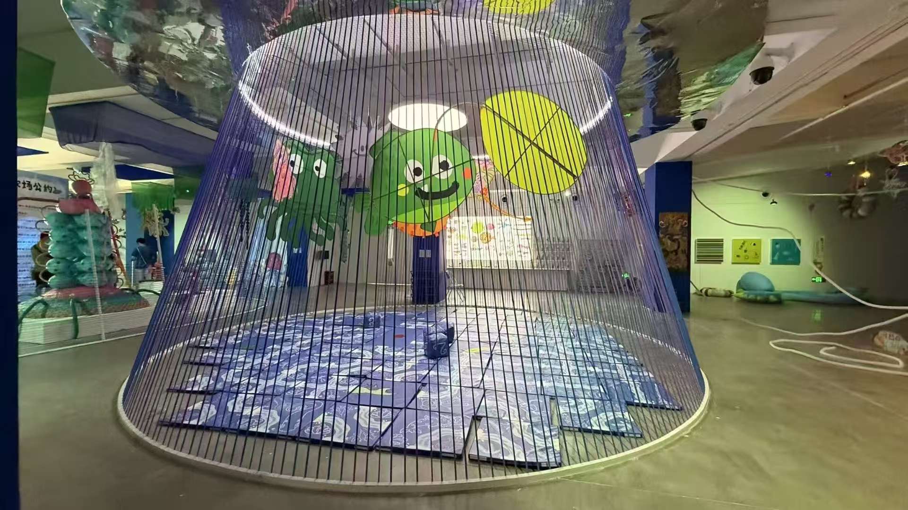